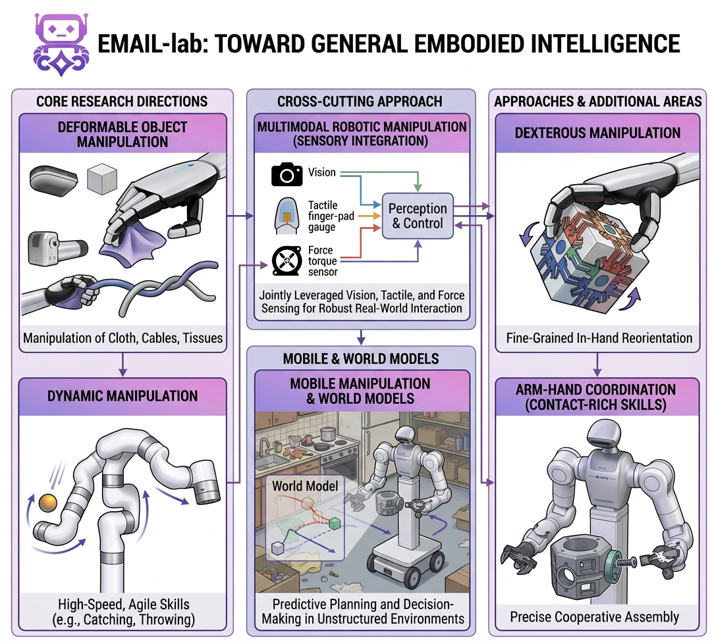
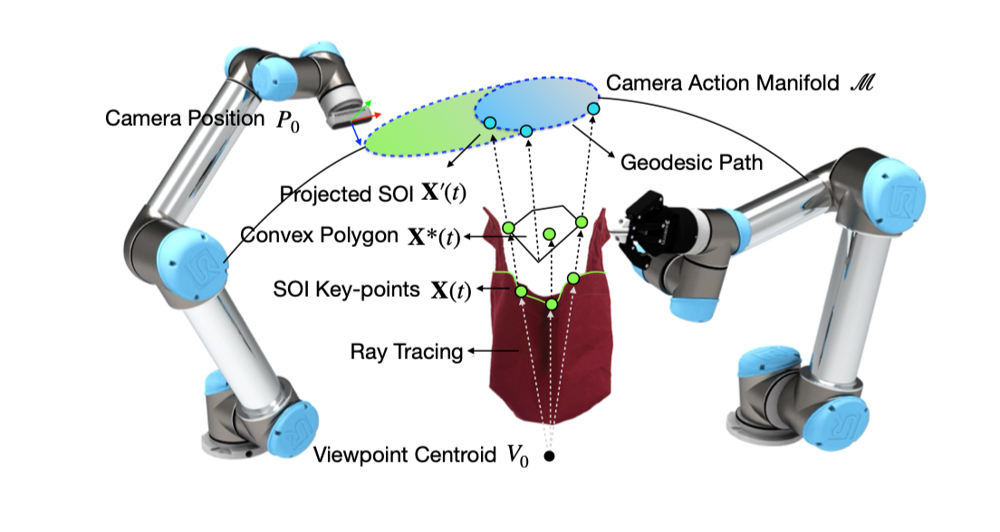
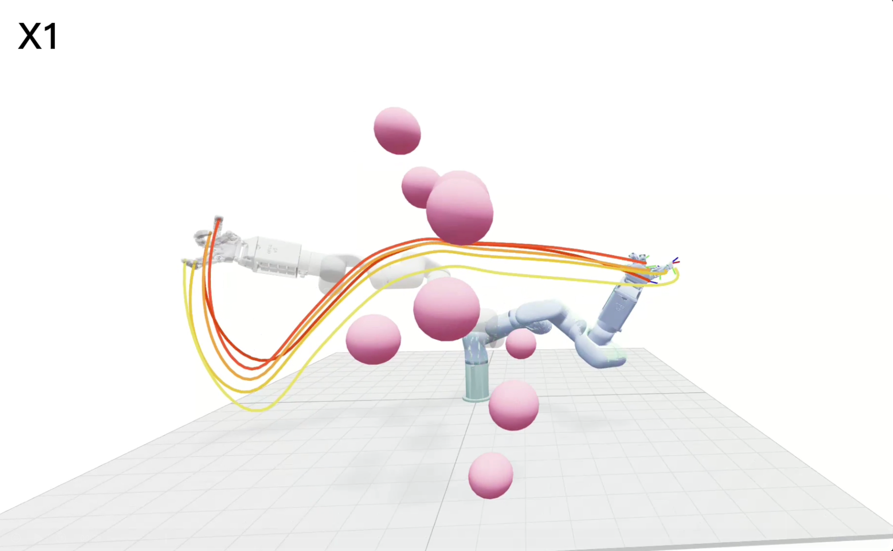
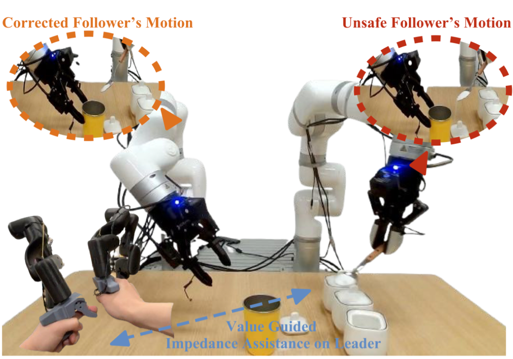

Research Overview

EMAIL-lab is dedicated to research in embodied intelligent manipulation, with the goal of enabling robots to interact with the physical world in a more skillful, adaptive, and generalizable manner. Our work spans a set of core research directions, including deformable object manipulation, dynamic manipulation, and dexterous manipulation, as well as arm-hand coordination for complex contact-rich skills. We are particularly interested in multimodal robotic manipulation, where vision, tactile, and force sensing are jointly leveraged to improve perception, control, and robustness in real-world interaction.
In addition, we study mobile manipulation and world models for embodied agents, aiming to endow robotic systems with stronger capabilities in prediction, planning, and decision-making in complex and unstructured environments. By combining advances in perception, control, learning, and physical reasoning, EMAIL-lab strives to push robotic manipulation toward more general embodied intelligence.
Featured Demos
Highlights from our recent teleoperation and dexterous manipulation work.
🥇 Champion Award-winning dexterous challenge runs using UniBiDex Teleoperation System for International Dexterity Challenge 2025.
Featured Research
Deformable object manipulation, multi-modal perception, and long-horizon autonomy.
Deformable Object Manipulation

Learning and modeling for non-rigid materials (garments, bags, granular materials), including neural particle-based dynamics and interactive perception under contact.
Dexterous Manipulation

Perception and control that fuse vision with touch/force feedback to handle uncertainty, detect contact, and improve dexterity.
Task & Motion Planning

Planning for long-horizon manipulation, including subgoal reasoning under sparse rewards and contact-aware trajectories.